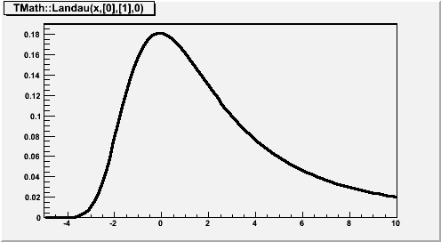
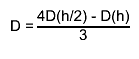
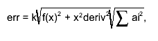

class TF1: public TFormula, public TAttLine, public TAttFill, public TAttMarker
TF1: 1-Dim function class
The function may be a simple function (see TFormula) or a precompiled user function.
The function may have associated parameters.
TF1 graphics function is via the TH1/TGraph drawing functions.
The following types of functions can be created:
- A - Expression using variable x and no parameters
- B - Expression using variable x with parameters
- C - A general C function with parameters
- D - A general C++ function object (functor) with parameters
- E - A member function with parameters of a general C++ class
A - Expression using variable x and no parameters
Case 1: inline expression using standard C++ functions/operators
TF1 *fa1 = new TF1("fa1","sin(x)/x",0,10);
fa1->Draw();
Case 2: inline expression using TMath functions without parameters
TF1 *fa2 = new TF1("fa2","TMath::DiLog(x)",0,10);
fa2->Draw();
Case 3: inline expression using a CINT function by name
Double_t myFunc(x) {
return x+sin(x);
}
TF1 *fa3 = new TF1("fa3","myFunc(x)",-3,5);
fa3->Draw();
B - Expression using variable x with parameters
Case 1: inline expression using standard C++ functions/operators
- Example a:
> TF1 *fa = new TF1("fa","[0]*x*sin([1]*x)",-3,3);This creates a function of variable x with 2 parameters. The parameters must be initialized via:
fa->SetParameter(0,value_first_parameter); fa->SetParameter(1,value_second_parameter);
Parameters may be given a name:fa->SetParName(0,"Constant");
- Example b:
> TF1 *fb = new TF1("fb","gaus(0)*expo(3)",0,10);gaus(0) is a substitute for [0]*exp(-0.5*((x-[1])/[2])**2) and (0) means start numbering parameters at 0. expo(3) is a substitute for exp([3]+[4]*x).
Case 2: inline expression using TMath functions with parameters
>
TF1 *fb2 = new TF1("fa3","TMath::Landau(x,[0],[1],0)",-5,10);
fb2->SetParameters(0.2,1.3);
fb2->Draw();

C - A general C function with parameters
Consider the macro myfunc.C below:
// Macro myfunc.C
Double_t myfunction(Double_t *x, Double_t *par)
{
Float_t xx =x[0];
Double_t f = TMath::Abs(par[0]*sin(par[1]*xx)/xx);
return f;
}
void myfunc()
{
TF1 *f1 = new TF1("myfunc",myfunction,0,10,2);
f1->SetParameters(2,1);
f1->SetParNames("constant","coefficient");
f1->Draw();
}
void myfit()
{
TH1F *h1=new TH1F("h1","test",100,0,10);
h1->FillRandom("myfunc",20000);
TF1 *f1=gROOT->GetFunction("myfunc");
f1->SetParameters(800,1);
h1->Fit("myfunc");
}
In an interactive session you can do:
Root > .L myfunc.C Root > myfunc(); Root > myfit();
TF1 objects can reference other TF1 objects (thanks John Odonnell) of type A or B defined above. This excludes CINT interpreted functions and compiled functions. However, there is a restriction. A function cannot reference a basic function if the basic function is a polynomial polN.
Example:
{
TF1 *fcos = new TF1 ("fcos", "[0]*cos(x)", 0., 10.);
fcos->SetParNames( "cos");
fcos->SetParameter( 0, 1.1);
TF1 *fsin = new TF1 ("fsin", "[0]*sin(x)", 0., 10.);
fsin->SetParNames( "sin");
fsin->SetParameter( 0, 2.1);
TF1 *fsincos = new TF1 ("fsc", "fcos+fsin");
TF1 *fs2 = new TF1 ("fs2", "fsc+fsc");
}
D - A general C++ function object (functor) with parameters
A TF1 can be created from any C++ class implementing the operator()(double *x, double *p). The advantage of the function object is that he can have a state and reference therefore what-ever other object. In this way the user can customize his function.Example:
class MyFunctionObject {
public:
// use constructor to customize your function object
double operator() (double *x, double *p) {
// function implementation using class data members
}
};
{
....
MyFunctionObject * fobj = new MyFunctionObject(....); // create the function object
TF1 * f = new TF1("f",fobj,0,1,npar,"MyFunctionObject"); // create TF1 class.
.....
}
E - A member function with parameters of a general C++ class
A TF1 can be created in this case from any member function of a class which has the signature of (double * , double *) and returning a double.Example:
class MyFunction {
public:
...
double Evaluate() (double *x, double *p) {
// function implementation
}
};
{
....
MyFunction * fptr = new MyFunction(....); // create the user function class
TF1 * f = new TF1("f",fptr,&MyFunction::Evaluate,0,1,npar,"MyFunction","Evaluate"); // create TF1 class.
.....
}
Function Members (Methods)
public:
| TF1() | |
| TF1(const TF1& f1) | |
| TF1(const char* name, const char* formula, Double_t xmin = 0, Double_t xmax = 1) | |
| TF1(const char* name, Double_t xmin, Double_t xmax, Int_t npar) | |
| TF1(const char* name, void* fcn, Double_t xmin, Double_t xmax, Int_t npar) | |
| TF1(const char* name, ROOT::Math::ParamFunctor f, Double_t xmin = 0, Double_t xmax = 1, Int_t npar = 0) | |
| TF1(const char* name, void* ptr, Double_t xmin, Double_t xmax, Int_t npar, const char* className) | |
| TF1(const char* name, void* ptr, void*, Double_t xmin, Double_t xmax, Int_t npar, const char* className, const char* methodName = 0) | |
| virtual | ~TF1() |
| void | TObject::AbstractMethod(const char* method) const |
| static void | AbsValue(Bool_t reject = kTRUE) |
| virtual void | TFormula::Analyze(const char* schain, Int_t& err, Int_t offset = 0) |
| virtual Bool_t | TFormula::AnalyzeFunction(TString& chaine, Int_t& err, Int_t offset = 0) |
| virtual void | TObject::AppendPad(Option_t* option = "") |
| virtual void | Browse(TBrowser* b) |
| static void | CalcGaussLegendreSamplingPoints(Int_t num, Double_t* x, Double_t* w, Double_t eps = 3.0e-11) |
| virtual Double_t | CentralMoment(Double_t n, Double_t a, Double_t b, const Double_t* params = 0, Double_t epsilon = 0.000001) |
| static TClass* | Class() |
| virtual const char* | TObject::ClassName() const |
| virtual void | TFormula::Clear(Option_t* option = "") |
| virtual TObject* | TNamed::Clone(const char* newname = "") const |
| virtual Int_t | TNamed::Compare(const TObject* obj) const |
| virtual Int_t | TFormula::Compile(const char* expression = "") |
| virtual void | Copy(TObject& f1) const |
| virtual char* | TFormula::DefinedString(Int_t code) |
| virtual Double_t | TFormula::DefinedValue(Int_t code) |
| virtual Int_t | TFormula::DefinedVariable(TString& variable, Int_t& action) |
| virtual void | TObject::Delete(Option_t* option = "")MENU |
| virtual Double_t | Derivative(Double_t x, Double_t* params = 0, Double_t epsilon = 0.001) const |
| virtual Double_t | Derivative2(Double_t x, Double_t* params = 0, Double_t epsilon = 0.001) const |
| virtual Double_t | Derivative3(Double_t x, Double_t* params = 0, Double_t epsilon = 0.001) const |
| static Double_t | DerivativeError() |
| Int_t | TAttLine::DistancetoLine(Int_t px, Int_t py, Double_t xp1, Double_t yp1, Double_t xp2, Double_t yp2) |
| virtual Int_t | DistancetoPrimitive(Int_t px, Int_t py) |
| virtual void | Draw(Option_t* option = "") |
| virtual void | TObject::DrawClass() constMENU |
| virtual TObject* | TObject::DrawClone(Option_t* option = "") constMENU |
| virtual TF1* | DrawCopy(Option_t* option = "") const |
| virtual TObject* | DrawDerivative(Option_t* option = "al")MENU |
| virtual void | DrawF1(const char* formula, Double_t xmin, Double_t xmax, Option_t* option = "") |
| virtual TObject* | DrawIntegral(Option_t* option = "al")MENU |
| virtual void | TObject::Dump() constMENU |
| virtual void | TObject::Error(const char* method, const char* msgfmt) const |
| virtual Double_t | Eval(Double_t x, Double_t y = 0, Double_t z = 0, Double_t t = 0) const |
| virtual Double_t | EvalPar(const Double_t* x, const Double_t* params = 0) |
| virtual Double_t | TFormula::EvalParOld(const Double_t* x, const Double_t* params = 0) |
| virtual void | TObject::Execute(const char* method, const char* params, Int_t* error = 0) |
| virtual void | TObject::Execute(TMethod* method, TObjArray* params, Int_t* error = 0) |
| virtual void | ExecuteEvent(Int_t event, Int_t px, Int_t py) |
| virtual void | TObject::Fatal(const char* method, const char* msgfmt) const |
| virtual void | TNamed::FillBuffer(char*& buffer) |
| virtual TObject* | TObject::FindObject(const char* name) const |
| virtual TObject* | TObject::FindObject(const TObject* obj) const |
| virtual void | FixParameter(Int_t ipar, Double_t value) |
| Double_t | GetChisquare() const |
| static TF1* | GetCurrent() |
| virtual Option_t* | TObject::GetDrawOption() const |
| static Long_t | TObject::GetDtorOnly() |
| virtual TString | TFormula::GetExpFormula(Option_t* option = "") const |
| virtual Color_t | TAttFill::GetFillColor() const |
| virtual Style_t | TAttFill::GetFillStyle() const |
| TH1* | GetHistogram() const |
| virtual const char* | TObject::GetIconName() const |
| virtual const TObject* | TFormula::GetLinearPart(Int_t i) |
| virtual Color_t | TAttLine::GetLineColor() const |
| virtual Style_t | TAttLine::GetLineStyle() const |
| virtual Width_t | TAttLine::GetLineWidth() const |
| virtual Color_t | TAttMarker::GetMarkerColor() const |
| virtual Size_t | TAttMarker::GetMarkerSize() const |
| virtual Style_t | TAttMarker::GetMarkerStyle() const |
| virtual Double_t | GetMaximum(Double_t xmin = 0, Double_t xmax = 0, Double_t epsilon = 1.E-10, Int_t maxiter = 100, Bool_t logx = false) const |
| virtual Double_t | GetMaximumX(Double_t xmin = 0, Double_t xmax = 0, Double_t epsilon = 1.E-10, Int_t maxiter = 100, Bool_t logx = false) const |
| TMethodCall* | GetMethodCall() const |
| virtual Double_t | GetMinimum(Double_t xmin = 0, Double_t xmax = 0, Double_t epsilon = 1.E-10, Int_t maxiter = 100, Bool_t logx = false) const |
| virtual Double_t | GetMinimumX(Double_t xmin = 0, Double_t xmax = 0, Double_t epsilon = 1.E-10, Int_t maxiter = 100, Bool_t logx = false) const |
| virtual const char* | TNamed::GetName() const |
| virtual Int_t | GetNDF() const |
| virtual Int_t | TFormula::GetNdim() const |
| virtual Int_t | TFormula::GetNpar() const |
| virtual Int_t | GetNpx() const |
| virtual Int_t | TFormula::GetNumber() const |
| virtual Int_t | GetNumberFitPoints() const |
| virtual Int_t | GetNumberFreeParameters() const |
| virtual char* | GetObjectInfo(Int_t px, Int_t py) const |
| static Bool_t | TObject::GetObjectStat() |
| virtual Option_t* | TObject::GetOption() const |
| Double_t | TFormula::GetParameter(Int_t ipar) const |
| Double_t | TFormula::GetParameter(const char* name) const |
| virtual Double_t* | TFormula::GetParameters() const |
| virtual void | TFormula::GetParameters(Double_t* params) |
| TObject* | GetParent() const |
| virtual Double_t | GetParError(Int_t ipar) const |
| virtual Double_t* | GetParErrors() const |
| virtual void | GetParLimits(Int_t ipar, Double_t& parmin, Double_t& parmax) const |
| virtual const char* | TFormula::GetParName(Int_t ipar) const |
| virtual Int_t | TFormula::GetParNumber(const char* name) const |
| virtual Double_t | GetProb() const |
| virtual Int_t | GetQuantiles(Int_t nprobSum, Double_t* q, const Double_t* probSum) |
| virtual Double_t | GetRandom() |
| virtual Double_t | GetRandom(Double_t xmin, Double_t xmax) |
| virtual void | GetRange(Double_t& xmin, Double_t& xmax) const |
| virtual void | GetRange(Double_t& xmin, Double_t& ymin, Double_t& xmax, Double_t& ymax) const |
| virtual void | GetRange(Double_t& xmin, Double_t& ymin, Double_t& zmin, Double_t& xmax, Double_t& ymax, Double_t& zmax) const |
| virtual Double_t | GetSave(const Double_t* x) |
| virtual const char* | TNamed::GetTitle() const |
| virtual UInt_t | TObject::GetUniqueID() const |
| virtual Double_t | GetX(Double_t y, Double_t xmin = 0, Double_t xmax = 0, Double_t epsilon = 1.E-10, Int_t maxiter = 100, Bool_t logx = false) const |
| TAxis* | GetXaxis() const |
| virtual Double_t | GetXmax() const |
| virtual Double_t | GetXmin() const |
| TAxis* | GetYaxis() const |
| TAxis* | GetZaxis() const |
| virtual Double_t | GradientPar(Int_t ipar, const Double_t* x, Double_t eps = 0.01) |
| virtual void | GradientPar(const Double_t* x, Double_t* grad, Double_t eps = 0.01) |
| virtual Bool_t | TObject::HandleTimer(TTimer* timer) |
| virtual ULong_t | TNamed::Hash() const |
| virtual void | TObject::Info(const char* method, const char* msgfmt) const |
| virtual Bool_t | TObject::InheritsFrom(const char* classname) const |
| virtual Bool_t | TObject::InheritsFrom(const TClass* cl) const |
| virtual void | InitArgs(const Double_t* x, const Double_t* params) |
| static void | InitStandardFunctions() |
| virtual void | TObject::Inspect() constMENU |
| virtual Double_t | Integral(Double_t a, Double_t b, const Double_t* params = 0, Double_t epsilon = 1e-12) |
| virtual Double_t | Integral(Double_t ax, Double_t bx, Double_t ay, Double_t by, Double_t epsilon = 1e-12) |
| virtual Double_t | Integral(Double_t ax, Double_t bx, Double_t ay, Double_t by, Double_t az, Double_t bz, Double_t epsilon = 1e-12) |
| virtual Double_t | IntegralError(Double_t a, Double_t b, const Double_t* params = 0, const Double_t* covmat = 0, Double_t epsilon = 1e-12) |
| virtual Double_t | IntegralError(Int_t n, const Double_t* a, const Double_t* b, const Double_t* params = 0, const Double_t* covmat = 0, Double_t epsilon = 1e-12) |
| virtual Double_t | IntegralFast(Int_t num, Double_t* x, Double_t* w, Double_t a, Double_t b, Double_t* params = 0, Double_t epsilon = 1e-12) |
| virtual Double_t | IntegralMultiple(Int_t n, const Double_t* a, const Double_t* b, Double_t epsilon, Double_t& relerr) |
| virtual Double_t | IntegralMultiple(Int_t n, const Double_t* a, const Double_t* b, Int_t minpts, Int_t maxpts, Double_t epsilon, Double_t& relerr, Int_t& nfnevl, Int_t& ifail) |
| void | TObject::InvertBit(UInt_t f) |
| virtual TClass* | IsA() const |
| virtual Bool_t | TObject::IsEqual(const TObject* obj) const |
| virtual Bool_t | TObject::IsFolder() const |
| virtual Bool_t | IsInside(const Double_t* x) const |
| virtual Bool_t | TFormula::IsLinear() |
| virtual Bool_t | TFormula::IsNormalized() |
| Bool_t | TObject::IsOnHeap() const |
| virtual Bool_t | TNamed::IsSortable() const |
| virtual Bool_t | TAttFill::IsTransparent() const |
| Bool_t | TObject::IsZombie() const |
| virtual void | TNamed::ls(Option_t* option = "") const |
| void | TObject::MayNotUse(const char* method) const |
| virtual Double_t | Mean(Double_t a, Double_t b, const Double_t* params = 0, Double_t epsilon = 0.000001) |
| virtual void | TAttLine::Modify() |
| virtual Double_t | Moment(Double_t n, Double_t a, Double_t b, const Double_t* params = 0, Double_t epsilon = 0.000001) |
| virtual Bool_t | TObject::Notify() |
| void | TObject::Obsolete(const char* method, const char* asOfVers, const char* removedFromVers) const |
| static void | TObject::operator delete(void* ptr) |
| static void | TObject::operator delete(void* ptr, void* vp) |
| static void | TObject::operator delete[](void* ptr) |
| static void | TObject::operator delete[](void* ptr, void* vp) |
| void* | TObject::operator new(size_t sz) |
| void* | TObject::operator new(size_t sz, void* vp) |
| void* | TObject::operator new[](size_t sz) |
| void* | TObject::operator new[](size_t sz, void* vp) |
| virtual Double_t | operator()(const Double_t* x, const Double_t* params = 0) |
| virtual Double_t | operator()(Double_t x, Double_t y = 0, Double_t z = 0, Double_t t = 0) const |
| TF1& | operator=(const TF1& rhs) |
| void | TFormula::Optimize() |
| virtual void | Paint(Option_t* option = "") |
| virtual void | TObject::Pop() |
| virtual void | Print(Option_t* option = "") const |
| virtual void | TFormula::ProcessLinear(TString& replaceformula) |
| virtual Int_t | TObject::Read(const char* name) |
| virtual void | TObject::RecursiveRemove(TObject* obj) |
| static Bool_t | RejectedPoint() |
| static void | RejectPoint(Bool_t reject = kTRUE) |
| virtual void | ReleaseParameter(Int_t ipar) |
| virtual void | TAttFill::ResetAttFill(Option_t* option = "") |
| virtual void | TAttLine::ResetAttLine(Option_t* option = "") |
| virtual void | TAttMarker::ResetAttMarker(Option_t* toption = "") |
| void | TObject::ResetBit(UInt_t f) |
| virtual void | Save(Double_t xmin, Double_t xmax, Double_t ymin, Double_t ymax, Double_t zmin, Double_t zmax) |
| virtual void | TObject::SaveAs(const char* filename = "", Option_t* option = "") constMENU |
| virtual void | TAttFill::SaveFillAttributes(ostream& out, const char* name, Int_t coldef = 1, Int_t stydef = 1001) |
| virtual void | TAttLine::SaveLineAttributes(ostream& out, const char* name, Int_t coldef = 1, Int_t stydef = 1, Int_t widdef = 1) |
| virtual void | TAttMarker::SaveMarkerAttributes(ostream& out, const char* name, Int_t coldef = 1, Int_t stydef = 1, Int_t sizdef = 1) |
| virtual void | SavePrimitive(ostream& out, Option_t* option = "") |
| void | TObject::SetBit(UInt_t f) |
| void | TObject::SetBit(UInt_t f, Bool_t set) |
| virtual void | SetChisquare(Double_t chi2) |
| static void | SetCurrent(TF1* f1) |
| virtual void | TObject::SetDrawOption(Option_t* option = "")MENU |
| static void | TObject::SetDtorOnly(void* obj) |
| virtual void | TAttFill::SetFillAttributes()MENU |
| virtual void | TAttFill::SetFillColor(Color_t fcolor) |
| virtual void | TAttFill::SetFillStyle(Style_t fstyle) |
| virtual void | SetFitResult(const ROOT::Fit::FitResult& result, const Int_t* indpar = 0) |
| virtual void | TAttLine::SetLineAttributes()MENU |
| virtual void | TAttLine::SetLineColor(Color_t lcolor) |
| virtual void | TAttLine::SetLineStyle(Style_t lstyle) |
| virtual void | TAttLine::SetLineWidth(Width_t lwidth) |
| virtual void | TAttMarker::SetMarkerAttributes()MENU |
| virtual void | TAttMarker::SetMarkerColor(Color_t tcolor = 1) |
| virtual void | TAttMarker::SetMarkerSize(Size_t msize = 1) |
| virtual void | TAttMarker::SetMarkerStyle(Style_t mstyle = 1) |
| static void | TFormula::SetMaxima(Int_t maxop = 1000, Int_t maxpar = 1000, Int_t maxconst = 1000) |
| virtual void | SetMaximum(Double_t maximum = -1111)MENU |
| virtual void | SetMinimum(Double_t minimum = -1111)MENU |
| virtual void | TNamed::SetName(const char* name)MENU |
| virtual void | TNamed::SetNameTitle(const char* name, const char* title) |
| virtual void | SetNDF(Int_t ndf) |
| virtual void | SetNpx(Int_t npx = 100)MENU |
| virtual void | TFormula::SetNumber(Int_t number) |
| virtual void | SetNumberFitPoints(Int_t npfits) |
| static void | TObject::SetObjectStat(Bool_t stat) |
| virtual void | TFormula::SetParameter(const char* name, Double_t parvalue) |
| virtual void | TFormula::SetParameter(Int_t ipar, Double_t parvalue) |
| virtual void | TFormula::SetParameters(const Double_t* params) |
| virtual void | TFormula::SetParameters(Double_t p0, Double_t p1, Double_t p2 = 0, Double_t p3 = 0, Double_t p4 = 0, Double_t p5 = 0, Double_t p6 = 0, Double_t p7 = 0, Double_t p8 = 0, Double_t p9 = 0, Double_t p10 = 0)MENU |
| virtual void | SetParent(TObject* p = 0) |
| virtual void | SetParError(Int_t ipar, Double_t error) |
| virtual void | SetParErrors(const Double_t* errors) |
| virtual void | SetParLimits(Int_t ipar, Double_t parmin, Double_t parmax) |
| virtual void | TFormula::SetParName(Int_t ipar, const char* name) |
| virtual void | TFormula::SetParNames(const char* name0 = "p0", const char* name1 = "p1", const char* name2 = "p2", const char* name3 = "p3", const char* name4 = "p4", const char* name5 = "p5", const char* name6 = "p6", const char* name7 = "p7", const char* name8 = "p8", const char* name9 = "p9", const char* name10 = "p10")MENU |
| virtual void | SetRange(Double_t xmin, Double_t xmax)MENU |
| virtual void | SetRange(Double_t xmin, Double_t ymin, Double_t xmax, Double_t ymax) |
| virtual void | SetRange(Double_t xmin, Double_t ymin, Double_t zmin, Double_t xmax, Double_t ymax, Double_t zmax) |
| virtual void | SetSavedPoint(Int_t point, Double_t value) |
| virtual void | SetTitle(const char* title = "")MENU |
| virtual void | TObject::SetUniqueID(UInt_t uid) |
| virtual void | ShowMembers(TMemberInspector& insp) |
| virtual Int_t | TNamed::Sizeof() const |
| virtual void | Streamer(TBuffer& b) |
| void | StreamerNVirtual(TBuffer& b) |
| virtual void | TObject::SysError(const char* method, const char* msgfmt) const |
| Bool_t | TObject::TestBit(UInt_t f) const |
| Int_t | TObject::TestBits(UInt_t f) const |
| virtual void | Update() |
| virtual void | TObject::UseCurrentStyle() |
| virtual Double_t | Variance(Double_t a, Double_t b, const Double_t* params = 0, Double_t epsilon = 0.000001) |
| virtual void | TObject::Warning(const char* method, const char* msgfmt) const |
| virtual Int_t | TObject::Write(const char* name = 0, Int_t option = 0, Int_t bufsize = 0) |
| virtual Int_t | TObject::Write(const char* name = 0, Int_t option = 0, Int_t bufsize = 0) const |
protected:
Data Members
public:
protected:
| Double_t* | fAlpha | !Array alpha. for each bin in x the deconvolution r of fIntegral |
| TBits | TFormula::fAlreadyFound | ! cache for information |
| Double_t* | fBeta | !Array beta. is approximated by x = alpha +beta*r *gamma*r**2 |
| Double_t | fChisquare | Function fit chisquare |
| void* | fCintFunc | ! pointer to interpreted function class |
| Double_t* | TFormula::fConst | [fNconst] Array of fNconst formula constants |
| TString* | TFormula::fExpr | [fNoper] List of expressions |
| TString* | TFormula::fExprOptimized | ![fNOperOptimized] List of expressions |
| Color_t | TAttFill::fFillColor | fill area color |
| Style_t | TAttFill::fFillStyle | fill area style |
| TObjArray | TFormula::fFunctions | Array of function calls to make |
| ROOT::Math::ParamFunctor | fFunctor | ! Functor object to wrap any C++ callable object |
| Double_t* | fGamma | !Array gamma. |
| TH1* | fHistogram | !Pointer to histogram used for visualisation |
| Double_t* | fIntegral | ![fNpx] Integral of function binned on fNpx bins |
| Color_t | TAttLine::fLineColor | line color |
| Style_t | TAttLine::fLineStyle | line style |
| Width_t | TAttLine::fLineWidth | line width |
| TObjArray | TFormula::fLinearParts | Linear parts if the formula is linear (contains '|' or "++") |
| Color_t | TAttMarker::fMarkerColor | Marker color index |
| Size_t | TAttMarker::fMarkerSize | Marker size |
| Style_t | TAttMarker::fMarkerStyle | Marker style |
| Double_t | fMaximum | Maximum value for plotting |
| TMethodCall* | fMethodCall | !Pointer to MethodCall in case of interpreted function |
| Double_t | fMinimum | Minimum value for plotting |
| Int_t | fNDF | Number of degrees of freedom in the fit |
| Int_t | TFormula::fNOperOptimized | !Number of operators after optimization |
| TString | TNamed::fName | object identifier |
| TString* | TFormula::fNames | [fNpar] Array of parameter names |
| Int_t | TFormula::fNconst | Number of constants |
| Int_t | TFormula::fNdim | Dimension of function (1=1-Dim, 2=2-Dim,etc) |
| Int_t | TFormula::fNoper | Number of operators |
| Int_t | TFormula::fNpar | Number of parameters |
| Int_t | fNpfits | Number of points used in the fit |
| Int_t | fNpx | Number of points used for the graphical representation |
| Int_t | fNsave | Number of points used to fill array fSave |
| Int_t | TFormula::fNstring | Number of different constants character strings |
| Int_t | TFormula::fNumber | formula number identifier |
| Int_t | TFormula::fNval | Number of different variables in expression |
| TOperOffset* | TFormula::fOperOffset | ![fNOperOptimized] Offsets of operrands |
| Int_t* | TFormula::fOperOptimized | ![fNOperOptimized] List of operators. (See documentation for changes made at version 7) |
| G__p2memfunc | TFormula::fOptimal | !pointer to optimal function |
| Double_t* | fParErrors | [fNpar] Array of errors of the fNpar parameters |
| Double_t* | fParMax | [fNpar] Array of upper limits of the fNpar parameters |
| Double_t* | fParMin | [fNpar] Array of lower limits of the fNpar parameters |
| Double_t* | TFormula::fParams | [fNpar] Array of fNpar parameters |
| TObject* | fParent | !Parent object hooking this function (if one) |
| TFormulaPrimitive** | TFormula::fPredefined | ![fNPar] predefined function |
| Double_t* | fSave | [fNsave] Array of fNsave function values |
| TString | TNamed::fTitle | object title |
| Int_t | fType | (=0 for standard functions, 1 if pointer to function) |
| Double_t | fXmax | Upper bounds for the range |
| Double_t | fXmin | Lower bounds for the range |
| static Bool_t | fgAbsValue | use absolute value of function when computing integral |
| static TF1* | fgCurrent | pointer to current function being processed |
| static Bool_t | fgRejectPoint | True if point must be rejected in a fit |
Class Charts
{kind=link}
{kind=link}
{kind=link}
{kind=link}
Function documentation
TF1(const char* name, const char* formula, Double_t xmin = 0, Double_t xmax = 1)
F1 constructor using a formula definition See TFormula constructor for explanation of the formula syntax. See tutorials: fillrandom, first, fit1, formula1, multifit for real examples. Creates a function of type A or B between xmin and xmax if formula has the form "fffffff;xxxx;yyyy", it is assumed that the formula string is "fffffff" and "xxxx" and "yyyy" are the titles for the X and Y axis respectively.
TF1(const char* name, Double_t xmin, Double_t xmax, Int_t npar)
F1 constructor using name of an interpreted function.
Creates a function of type C between xmin and xmax.
name is the name of an interpreted CINT cunction.
The function is defined with npar parameters
fcn must be a function of type:
Double_t fcn(Double_t *x, Double_t *params)
This constructor is called for functions of type C by CINT.
WARNING! A function created with this constructor cannot be Cloned.
TF1(const char* name, void* fcn, Double_t xmin, Double_t xmax, Int_t npar)
F1 constructor using pointer to an interpreted function. See TFormula constructor for explanation of the formula syntax. Creates a function of type C between xmin and xmax. The function is defined with npar parameters fcn must be a function of type: Double_t fcn(Double_t *x, Double_t *params) see tutorial; myfit for an example of use also test/stress.cxx (see function stress1) This constructor is called for functions of type C by CINT. WARNING! A function created with this constructor cannot be Cloned.
TF1(const char* name, ROOT::Math::ParamFunctor f, Double_t xmin = 0, Double_t xmax = 1, Int_t npar = 0)
F1 constructor using a pointer to a real function. npar is the number of free parameters used by the function This constructor creates a function of type C when invoked with the normal C++ compiler. see test program test/stress.cxx (function stress1) for an example. note the interface with an intermediate pointer. WARNING! A function created with this constructor cannot be Cloned.
TF1(const char *name,Double_t (*fcn)(const Double_t *, const Double_t *), Double_t xmin, Double_t xmax, Int_t npar)
F1 constructor using a pointer to real function. npar is the number of free parameters used by the function This constructor creates a function of type C when invoked with the normal C++ compiler. see test program test/stress.cxx (function stress1) for an example. note the interface with an intermediate pointer. WARNING! A function created with this constructor cannot be Cloned.
TF1(const char* name, ROOT::Math::ParamFunctor f, Double_t xmin = 0, Double_t xmax = 1, Int_t npar = 0)
F1 constructor using the Functor class. xmin and xmax define the plotting range of the function npar is the number of free parameters used by the function This constructor can be used only in compiled code WARNING! A function created with this constructor cannot be Cloned.
void CreateFromFunctor(const char* name, Int_t npar)
Internal Function to Create a TF1 using a Functor. Used by the template constructors
TF1(const char* name, void* ptr, Double_t xmin, Double_t xmax, Int_t npar, const char* className)
F1 constructor from an interpreted class defining the operator() or Eval(). This constructor emulate the syntax of the template constructor using a C++ callable object (functor) which can be used only in C++ compiled mode. The class name is required to get the type of class given the void pointer ptr. For the method name is used the operator() (double *, double * ). Use the other constructor taking the method name for different method names. xmin and xmax specify the function plotting range npar are the number of function parameters see tutorial math.exampleFunctor.C for an example of using this constructor This constructor is used only when using CINT. In compiled mode the template constructor is used and in that case className is not needed
void CreateFromCintClass(const char* name, void* ptr, Double_t xmin, Double_t xmax, Int_t npar, const char* cname, const char* fname)
Internal function used to create from TF1 from an interpreter CINT class with the specified type (className) and member function name (methodName).
void AbsValue(Bool_t reject = kTRUE)
Static function: set the fgAbsValue flag. By default TF1::Integral uses the original function value to compute the integral However, TF1::Moment, CentralMoment require to compute the integral using the absolute value of the function.
Double_t Derivative(Double_t x, Double_t* params = 0, Double_t epsilon = 0.001) const
Returns the first derivative of the function at point x, computed by Richardson's extrapolation method (use 2 derivative estimates to compute a third, more accurate estimation) first, derivatives with steps h and h/2 are computed by central difference formulasthe final estimate
"Numerical Methods for Scientists and Engineers", H.M.Antia, 2nd edition" if the argument params is null, the current function parameters are used, otherwise the parameters in params are used. the argument eps may be specified to control the step size (precision). the step size is taken as eps*(xmax-xmin). the default value (0.001) should be good enough for the vast majority of functions. Give a smaller value if your function has many changes of the second derivative in the function range. Getting the error via TF1::DerivativeError: (total error = roundoff error + interpolation error) the estimate of the roundoff error is taken as follows:
where k is the double precision, ai are coefficients used in central difference formulas interpolation error is decreased by making the step size h smaller. Author: Anna Kreshuk
Double_t Derivative2(Double_t x, Double_t* params = 0, Double_t epsilon = 0.001) const
Returns the second derivative of the function at point x, computed by Richardson's extrapolation method (use 2 derivative estimates to compute a third, more accurate estimation) first, derivatives with steps h and h/2 are computed by central difference formulasthe final estimate  "Numerical Methods for Scientists and Engineers", H.M.Antia, 2nd edition" if the argument params is null, the current function parameters are used, otherwise the parameters in params are used. the argument eps may be specified to control the step size (precision). the step size is taken as eps*(xmax-xmin). the default value (0.001) should be good enough for the vast majority of functions. Give a smaller value if your function has many changes of the second derivative in the function range. Getting the error via TF1::DerivativeError: (total error = roundoff error + interpolation error) the estimate of the roundoff error is taken as follows:  where k is the double precision, ai are coefficients used in central difference formulas interpolation error is decreased by making the step size h smaller. Author: Anna Kreshuk
Double_t Derivative3(Double_t x, Double_t* params = 0, Double_t epsilon = 0.001) const
Returns the third derivative of the function at point x, computed by Richardson's extrapolation method (use 2 derivative estimates to compute a third, more accurate estimation) first, derivatives with steps h and h/2 are computed by central difference formulasthe final estimate
"Numerical Methods for Scientists and Engineers", H.M.Antia, 2nd edition" if the argument params is null, the current function parameters are used, otherwise the parameters in params are used. the argument eps may be specified to control the step size (precision). the step size is taken as eps*(xmax-xmin). the default value (0.001) should be good enough for the vast majority of functions. Give a smaller value if your function has many changes of the second derivative in the function range. Getting the error via TF1::DerivativeError: (total error = roundoff error + interpolation error) the estimate of the roundoff error is taken as follows:
where k is the double precision, ai are coefficients used in central difference formulas interpolation error is decreased by making the step size h smaller. Author: Anna Kreshuk
Double_t DerivativeError()
Static function returning the error of the last call to the of Derivative's functions
Int_t DistancetoPrimitive(Int_t px, Int_t py)
Compute distance from point px,py to a function. Compute the closest distance of approach from point px,py to this function. The distance is computed in pixels units. Note that px is called with a negative value when the TF1 is in TGraph or TH1 list of functions. In this case there is no point looking at the histogram axis.
void Draw(Option_t* option = "")
Draw this function with its current attributes. Possible option values are: "SAME" superimpose on top of existing picture "L" connect all computed points with a straight line "C" connect all computed points with a smooth curve "FC" draw a fill area below a smooth curve Note that the default value is "L". Therefore to draw on top of an existing picture, specify option "LSAME" NB. You must use DrawCopy if you want to draw several times the same function in the current canvas.
TF1 * DrawCopy(Option_t* option = "") const
Draw a copy of this function with its current attributes. This function MUST be used instead of Draw when you want to draw the same function with different parameters settings in the same canvas. Possible option values are: "SAME" superimpose on top of existing picture "L" connect all computed points with a straight line "C" connect all computed points with a smooth curve "FC" draw a fill area below a smooth curve Note that the default value is "L". Therefore to draw on top of an existing picture, specify option "LSAME"
TObject * DrawDerivative(Option_t* option = "al")
Draw derivative of this function An intermediate TGraph object is built and drawn with option. The function returns a pointer to the TGraph object. Do: TGraph *g = (TGraph*)myfunc.DrawDerivative(option); The resulting graph will be drawn into the current pad. If this function is used via the context menu, it recommended to create a new canvas/pad before invoking this function.
TObject * DrawIntegral(Option_t* option = "al")
Draw integral of this function An intermediate TGraph object is built and drawn with option. The function returns a pointer to the TGraph object. Do: TGraph *g = (TGraph*)myfunc.DrawIntegral(option); The resulting graph will be drawn into the current pad. If this function is used via the context menu, it recommended to create a new canvas/pad before invoking this function.
void DrawF1(const char* formula, Double_t xmin, Double_t xmax, Option_t* option = "")
Draw formula between xmin and xmax.
Double_t Eval(Double_t x, Double_t y = 0, Double_t z = 0, Double_t t = 0) const
Evaluate this formula.
Computes the value of this function (general case for a 3-d function)
at point x,y,z.
For a 1-d function give y=0 and z=0
The current value of variables x,y,z is passed through x, y and z.
The parameters used will be the ones in the array params if params is given
otherwise parameters will be taken from the stored data members fParams
Double_t EvalPar(const Double_t* x, const Double_t* params = 0)
Evaluate function with given coordinates and parameters. Compute the value of this function at point defined by array x and current values of parameters in array params. If argument params is omitted or equal 0, the internal values of parameters (array fParams) will be used instead. For a 1-D function only x[0] must be given. In case of a multi-dimemsional function, the arrays x must be filled with the corresponding number of dimensions. WARNING. In case of an interpreted function (fType=2), it is the user's responsability to initialize the parameters via InitArgs before calling this function. InitArgs should be called at least once to specify the addresses of the arguments x and params. InitArgs should be called everytime these addresses change.
void ExecuteEvent(Int_t event, Int_t px, Int_t py)
Execute action corresponding to one event. This member function is called when a F1 is clicked with the locator
void FixParameter(Int_t ipar, Double_t value)
Fix the value of a parameter The specified value will be used in a fit operation
Double_t GetMaximum(Double_t xmin = 0, Double_t xmax = 0, Double_t epsilon = 1.E-10, Int_t maxiter = 100, Bool_t logx = false) const
Return the maximum value of the function Method: First, the grid search is used to bracket the maximum with the step size = (xmax-xmin)/fNpx. This way, the step size can be controlled via the SetNpx() function. If the function is unimodal or if its extrema are far apart, setting the fNpx to a small value speeds the algorithm up many times. Then, Brent's method is applied on the bracketed interval epsilon (default = 1.E-10) controls the relative accuracy (if |x| > 1 ) and absolute (if |x| < 1) and maxiter (default = 100) controls the maximum number of iteration of the Brent algorithm If the flag logx is set the grid search is done in log step size This is done automatically if the log scale is set in the current Pad NOTE: see also TF1::GetMaximumX and TF1::GetX
Double_t GetMaximumX(Double_t xmin = 0, Double_t xmax = 0, Double_t epsilon = 1.E-10, Int_t maxiter = 100, Bool_t logx = false) const
Return the X value corresponding to the maximum value of the function Method: First, the grid search is used to bracket the maximum with the step size = (xmax-xmin)/fNpx. This way, the step size can be controlled via the SetNpx() function. If the function is unimodal or if its extrema are far apart, setting the fNpx to a small value speeds the algorithm up many times. Then, Brent's method is applied on the bracketed interval epsilon (default = 1.E-10) controls the relative accuracy (if |x| > 1 ) and absolute (if |x| < 1) and maxiter (default = 100) controls the maximum number of iteration of the Brent algorithm If the flag logx is set the grid search is done in log step size This is done automatically if the log scale is set in the current Pad NOTE: see also TF1::GetX
Double_t GetMinimum(Double_t xmin = 0, Double_t xmax = 0, Double_t epsilon = 1.E-10, Int_t maxiter = 100, Bool_t logx = false) const
Returns the minimum value of the function on the (xmin, xmax) interval Method: First, the grid search is used to bracket the maximum with the step size = (xmax-xmin)/fNpx. This way, the step size can be controlled via the SetNpx() function. If the function is unimodal or if its extrema are far apart, setting the fNpx to a small value speeds the algorithm up many times. Then, Brent's method is applied on the bracketed interval epsilon (default = 1.E-10) controls the relative accuracy (if |x| > 1 ) and absolute (if |x| < 1) and maxiter (default = 100) controls the maximum number of iteration of the Brent algorithm If the flag logx is set the grid search is done in log step size This is done automatically if the log scale is set in the current Pad NOTE: see also TF1::GetMaximumX and TF1::GetX
Double_t GetMinimumX(Double_t xmin = 0, Double_t xmax = 0, Double_t epsilon = 1.E-10, Int_t maxiter = 100, Bool_t logx = false) const
Returns the X value corresponding to the minimum value of the function on the (xmin, xmax) interval Method: First, the grid search is used to bracket the maximum with the step size = (xmax-xmin)/fNpx. This way, the step size can be controlled via the SetNpx() function. If the function is unimodal or if its extrema are far apart, setting the fNpx to a small value speeds the algorithm up many times. Then, Brent's method is applied on the bracketed interval epsilon (default = 1.E-10) controls the relative accuracy (if |x| > 1 ) and absolute (if |x| < 1) and maxiter (default = 100) controls the maximum number of iteration of the Brent algorithm If the flag logx is set the grid search is done in log step size This is done automatically if the log scale is set in the current Pad NOTE: see also TF1::GetX
Double_t GetX(Double_t y, Double_t xmin = 0, Double_t xmax = 0, Double_t epsilon = 1.E-10, Int_t maxiter = 100, Bool_t logx = false) const
Returns the X value corresponding to the function value fy for (xmin<x<xmax). in other words it can find the roots of the function when fy=0 and successive calls by changing the next call to [xmin+eps,xmax] where xmin is the previous root. Method: First, the grid search is used to bracket the maximum with the step size = (xmax-xmin)/fNpx. This way, the step size can be controlled via the SetNpx() function. If the function is unimodal or if its extrema are far apart, setting the fNpx to a small value speeds the algorithm up many times. Then, Brent's method is applied on the bracketed interval epsilon (default = 1.E-10) controls the relative accuracy (if |x| > 1 ) and absolute (if |x| < 1) and maxiter (default = 100) controls the maximum number of iteration of the Brent algorithm If the flag logx is set the grid search is done in log step size This is done automatically if the log scale is set in the current Pad NOTE: see also TF1::GetMaximumX, TF1::GetMinimumX
Int_t GetNDF() const
Return the number of degrees of freedom in the fit the fNDF parameter has been previously computed during a fit. The number of degrees of freedom corresponds to the number of points used in the fit minus the number of free parameters.
char * GetObjectInfo(Int_t px, Int_t py) const
Redefines TObject::GetObjectInfo. Displays the function info (x, function value) corresponding to cursor position px,py
void GetParLimits(Int_t ipar, Double_t& parmin, Double_t& parmax) const
Return limits for parameter ipar.
Int_t GetQuantiles(Int_t nprobSum, Double_t* q, const Double_t* probSum)
Compute Quantiles for density distribution of this function
Quantile x_q of a probability distribution Function F is defined as
For instance the median of a distribution is defined as that value
of the random variable for which the distribution function equals 0.5:
code from Eddy Offermann, Renaissance
input parameters
- this TF1 function
- nprobSum maximum size of array q and size of array probSum
- probSum array of positions where quantiles will be computed.
It is assumed to contain at least nprobSum values.
output
- return value nq (<=nprobSum) with the number of quantiles computed
- array q filled with nq quantiles
Getting quantiles from two histograms and storing results in a TGraph,
a so-called QQ-plot
TGraph *gr = new TGraph(nprob);
f1->GetQuantiles(nprob,gr->GetX());
f2->GetQuantiles(nprob,gr->GetY());
gr->Draw("alp");
Double_t GetRandom()
Return a random number following this function shape The distribution contained in the function fname (TF1) is integrated over the channel contents. It is normalized to 1. For each bin the integral is approximated by a parabola. The parabola coefficients are stored as non persistent data members Getting one random number implies: - Generating a random number between 0 and 1 (say r1) - Look in which bin in the normalized integral r1 corresponds to - Evaluate the parabolic curve in the selected bin to find the corresponding X value. if the ratio fXmax/fXmin > fNpx the integral is tabulated in log scale in x The parabolic approximation is very good as soon as the number of bins is greater than 50.
Double_t GetRandom(Double_t xmin, Double_t xmax)
Return a random number following this function shape in [xmin,xmax] The distribution contained in the function fname (TF1) is integrated over the channel contents. It is normalized to 1. For each bin the integral is approximated by a parabola. The parabola coefficients are stored as non persistent data members Getting one random number implies: - Generating a random number between 0 and 1 (say r1) - Look in which bin in the normalized integral r1 corresponds to - Evaluate the parabolic curve in the selected bin to find the corresponding X value. The parabolic approximation is very good as soon as the number of bins is greater than 50. IMPORTANT NOTE The integral of the function is computed at fNpx points. If the function has sharp peaks, you should increase the number of points (SetNpx) such that the peak is correctly tabulated at several points.
void GetRange(Double_t& xmin, Double_t& ymin, Double_t& xmax, Double_t& ymax) const
Return range of a 2-D function.
void GetRange(Double_t& xmin, Double_t& ymin, Double_t& zmin, Double_t& xmax, Double_t& ymax, Double_t& zmax) const
Return range of function.
Double_t GradientPar(Int_t ipar, const Double_t* x, Double_t eps = 0.01)
Compute the gradient (derivative) wrt a parameter ipar Parameters: ipar - index of parameter for which the derivative is computed x - point, where the derivative is computed eps - if the errors of parameters have been computed, the step used in numerical differentiation is eps*parameter_error. if the errors have not been computed, step=eps is used default value of eps = 0.01 Method is the same as in Derivative() function If a paramter is fixed, the gradient on this parameter = 0
void GradientPar(const Double_t* x, Double_t* grad, Double_t eps = 0.01)
Compute the gradient wrt parameters Parameters: x - point, were the gradient is computed grad - used to return the computed gradient, assumed to be of at least fNpar size eps - if the errors of parameters have been computed, the step used in numerical differentiation is eps*parameter_error. if the errors have not been computed, step=eps is used default value of eps = 0.01 Method is the same as in Derivative() function If a paramter is fixed, the gradient on this parameter = 0
Double_t Integral(Double_t a, Double_t b, const Double_t* params = 0, Double_t epsilon = 1e-12)
Return Integral of function between a and b. based on original CERNLIB routine DGAUSS by Sigfried Kolbig converted to C++ by Rene Brun This function computes, to an attempted specified accuracy, the value of the integral. Usage: In any arithmetic expression, this function has the approximate value of the integral I. - A, B: End-points of integration interval. Note that B may be less than A. - params: Array of function parameters. If 0, use current parameters. - epsilon: Accuracy parameter (see Accuracy). Method: For any interval [a,b] we define g8(a,b) and g16(a,b) to be the 8-point and 16-point Gaussian quadrature approximations to and defineThen,
where, starting with x0 = A and finishing with xk = B, the subdivision points xi(i=1,2,...) are given by
is equal to the first member of the sequence 1,1/2,1/4,... for which r(xi-1, xi) < EPS. If, at any stage in the process of subdivision, the ratio is so small that 1+0.005q is indistinguishable from 1 to machine accuracy, an error exit occurs with the function value set equal to zero. Accuracy: Unless there is severe cancellation of positive and negative values of f(x) over the interval [A,B], the argument EPS may be considered as specifying a bound on the <I>relative</I> error of I in the case |I|>1, and a bound on the absolute error in the case |I|<1. More precisely, if k is the number of sub-intervals contributing to the approximation (see Method), and if
then the relation will nearly always be true, provided the routine terminates without printing an error message. For functions f having no singularities in the closed interval [A,B] the accuracy will usually be much higher than this. Error handling: The requested accuracy cannot be obtained (see Method). The function value is set equal to zero. Note 1: Values of the function f(x) at the interval end-points A and B are not required. The subprogram may therefore be used when these values are undefined. Note 2: Instead of TF1::Integral, you may want to use the combination of TF1::CalcGaussLegendreSamplingPoints and TF1::IntegralFast. See an example with the following script: void gint() { TF1 *g = new TF1("g","gaus",-5,5); g->SetParameters(1,0,1); //default gaus integration method uses 6 points //not suitable to integrate on a large domain double r1 = g->Integral(0,5); double r2 = g->Integral(0,1000); //try with user directives computing more points Int_t np = 1000; double *x=new double[np]; double *w=new double[np]; g->CalcGaussLegendreSamplingPoints(np,x,w,1e-15); double r3 = g->IntegralFast(np,x,w,0,5); double r4 = g->IntegralFast(np,x,w,0,1000); double r5 = g->IntegralFast(np,x,w,0,10000); double r6 = g->IntegralFast(np,x,w,0,100000); printf("g->Integral(0,5) = %g\n",r1); printf("g->Integral(0,1000) = %g\n",r2); printf("g->IntegralFast(n,x,w,0,5) = %g\n",r3); printf("g->IntegralFast(n,x,w,0,1000) = %g\n",r4); printf("g->IntegralFast(n,x,w,0,10000) = %g\n",r5); printf("g->IntegralFast(n,x,w,0,100000)= %g\n",r6); delete [] x; delete [] w; } This example produces the following results: g->Integral(0,5) = 1.25331 g->Integral(0,1000) = 1.25319 g->IntegralFast(n,x,w,0,5) = 1.25331 g->IntegralFast(n,x,w,0,1000) = 1.25331 g->IntegralFast(n,x,w,0,10000) = 1.25331 g->IntegralFast(n,x,w,0,100000)= 1.253
Double_t Integral(Double_t ax, Double_t bx, Double_t ay, Double_t by, Double_t epsilon = 1e-12)
Return Integral of a 2d function in range [ax,bx],[ay,by]
Double_t Integral(Double_t ax, Double_t bx, Double_t ay, Double_t by, Double_t az, Double_t bz, Double_t epsilon = 1e-12)
Return Integral of a 3d function in range [ax,bx],[ay,by],[az,bz]
Double_t IntegralError(Double_t a, Double_t b, const Double_t* params = 0, const Double_t* covmat = 0, Double_t epsilon = 1e-12)
Return Error on Integral of a parameteric function between a and b due to the parameter uncertainties. A pointer to a vector of parameter values and to the elements of the covariance matrix (covmat) can be optionally passed. By default (i.e. when a zero pointer is passed) the current stored parameter values are used to estimate the integral error together with the covariance matrix from the last fit (retrieved from the global fitter instance) IMPORTANT NOTE1: When no covariance matrix is passed and in the meantime a fit is done using another function, the routine will signal an error and it will return zero only when the number of fit parameter is different than the values stored in TF1 (TF1::GetNpar() ). In the case that npar is the same, an incorrect result is returned. IMPORTANT NOTE2: The user must pass a pointer to the elements of the full covariance matrix dimensioned with the right size (npar*npar), where npar is the total number of parameters (TF1::GetNpar()), including also the fixed parameters. When there are fixed parameters, the pointer returned from TVirtualFitter::GetCovarianceMatrix() cannot be used. One should use the TFitResult class, as shown in the example below. To get the matrix and values from an old fit do for example: TFitResultPtr r = histo->Fit(func, "S"); ..... after performing other fits on the same function do func->IntegralError(x1,x2,r->GetParams(), r->GetCovarianceMatrix()->GetMatrixArray() );
Double_t IntegralError(Int_t n, const Double_t* a, const Double_t* b, const Double_t* params = 0, const Double_t* covmat = 0, Double_t epsilon = 1e-12)
Return Error on Integral of a parameteric function with dimension larger tan one between a[] and b[] due to the parameters uncertainties. For a TF1 with dimension larger than 1 (for example a TF2 or TF3) TF1::IntegralMultiple is used for the integral calculation A pointer to a vector of parameter values and to the elements of the covariance matrix (covmat) can be optionally passed. By default (i.e. when a zero pointer is passed) the current stored parameter values are used to estimate the integral error together with the covariance matrix from the last fit (retrieved from the global fitter instance). IMPORTANT NOTE1: When no covariance matrix is passed and in the meantime a fit is done using another function, the routine will signal an error and it will return zero only when the number of fit parameter is different than the values stored in TF1 (TF1::GetNpar() ). In the case that npar is the same, an incorrect result is returned. IMPORTANT NOTE2: The user must pass a pointer to the elements of the full covariance matrix dimensioned with the right size (npar*npar), where npar is the total number of parameters (TF1::GetNpar()), including also the fixed parameters. When there are fixed parameters, the pointer returned from TVirtualFitter::GetCovarianceMatrix() cannot be used. One should use the TFitResult class, as shown in the example below. To get the matrix and values from an old fit do for example: TFitResultPtr r = histo->Fit(func, "S"); ..... after performing other fits on the same function do func->IntegralError(x1,x2,r->GetParams(), r->GetCovarianceMatrix()->GetMatrixArray() );
Double_t IntegralFast(const TGraph *g, Double_t a, Double_t b, Double_t *params)
Gauss-Legendre integral, see CalcGaussLegendreSamplingPoints
Double_t IntegralMultiple(Int_t n, const Double_t* a, const Double_t* b, Double_t epsilon, Double_t& relerr)
See more general prototype below. This interface kept for back compatibility
Double_t IntegralMultiple(Int_t n, const Double_t* a, const Double_t* b, Int_t minpts, Int_t maxpts, Double_t epsilon, Double_t& relerr, Int_t& nfnevl, Int_t& ifail)
Adaptive Quadrature for Multiple Integrals over N-Dimensional Rectangular Regions Author(s): A.C. Genz, A.A. Malik converted/adapted by R.Brun to C++ from Fortran CERNLIB routine RADMUL (D120) The new code features many changes compared to the Fortran version. Note that this function is currently called only by TF2::Integral (n=2) and TF3::Integral (n=3). This function computes, to an attempted specified accuracy, the value of the integral over an n-dimensional rectangular region. Input parameters: n : Number of dimensions [2,15] a,b : One-dimensional arrays of length >= N . On entry A[i], and B[i], contain the lower and upper limits of integration, respectively. minpts: Minimum number of function evaluations requested. Must not exceed maxpts. if minpts < 1 minpts is set to 2^n +2*n*(n+1) +1 maxpts: Maximum number of function evaluations to be allowed. maxpts >= 2^n +2*n*(n+1) +1 if maxpts<minpts, maxpts is set to 10*minpts eps : Specified relative accuracy. Output parameters: relerr : Contains, on exit, an estimation of the relative accuracy of the result. nfnevl : number of function evaluations performed. ifail : 0 Normal exit. . At least minpts and at most maxpts calls to the function were performed. 1 maxpts is too small for the specified accuracy eps. The result and relerr contain the values obtainable for the specified value of maxpts. 3 n<2 or n>15 Method: An integration rule of degree seven is used together with a certain strategy of subdivision. For a more detailed description of the method see References. Notes: 1.Multi-dimensional integration is time-consuming. For each rectangular subregion, the routine requires function evaluations. Careful programming of the integrand might result in substantial saving of time. 2.Numerical integration usually works best for smooth functions. Some analysis or suitable transformations of the integral prior to numerical work may contribute to numerical efficiency. References: 1.A.C. Genz and A.A. Malik, Remarks on algorithm 006: An adaptive algorithm for numerical integration over an N-dimensional rectangular region, J. Comput. Appl. Math. 6 (1980) 295-302. 2.A. van Doren and L. de Ridder, An adaptive algorithm for numerical integration over an n-dimensional cube, J.Comput. Appl. Math. 2 (1976) 207-217.
void ReleaseParameter(Int_t ipar)
Release parameter number ipar If used in a fit, the parameter can vary freely. The parameter limits are reset to 0,0.
void SavePrimitive(ostream& out, Option_t* option = "")
Save primitive as a C++ statement(s) on output stream out
void SetCurrent(TF1* f1)
Static function setting the current function. the current function may be accessed in static C-like functions when fitting or painting a function.
void SetFitResult(const ROOT::Fit::FitResult& result, const Int_t* indpar = 0)
Set the result from the fit
parameter values, errors, chi2, etc...
Optionally a pointer to a vector (with size fNpar) of the parameter indices in the FitResult can be passed
This is useful in the case of a combined fit with different functions, and the FitResult contains the global result
By default it is assume that indpar = {0,1,2,....,fNpar-1}.
void SetMaximum(Double_t maximum = -1111)
Set the maximum value along Y for this function In case the function is already drawn, set also the maximum in the helper histogram
void SetMinimum(Double_t minimum = -1111)
Set the minimum value along Y for this function In case the function is already drawn, set also the minimum in the helper histogram
void SetNDF(Int_t ndf)
Set the number of degrees of freedom ndf should be the number of points used in a fit - the number of free parameters
void SetNpx(Int_t npx = 100)
Set the number of points used to draw the function The default number of points along x is 100 for 1-d functions and 30 for 2-d/3-d functions You can increase this value to get a better resolution when drawing pictures with sharp peaks or to get a better result when using TF1::GetRandom the minimum number of points is 4, the maximum is 10000000 for 1-d and 10000 for 2-d/3-d functions
void SetParErrors(const Double_t* errors)
Set errors for all active parameters when calling this function, the array errors must have at least fNpar values
void SetParLimits(Int_t ipar, Double_t parmin, Double_t parmax)
Set limits for parameter ipar. The specified limits will be used in a fit operation when the option "B" is specified (Bounds). To fix a parameter, use TF1::FixParameter
void SetRange(Double_t xmin, Double_t xmax)
Initialize the upper and lower bounds to draw the function.
The function range is also used in an histogram fit operation
when the option "R" is specified.
void SetTitle(const char* title = "")
Set function title if title has the form "fffffff;xxxx;yyyy", it is assumed that the function title is "fffffff" and "xxxx" and "yyyy" are the titles for the X and Y axis respectively.
void Update()
Called by functions such as SetRange, SetNpx, SetParameters to force the deletion of the associated histogram or Integral
void RejectPoint(Bool_t reject = kTRUE)
Static function to set the global flag to reject points the fgRejectPoint global flag is tested by all fit functions if TRUE the point is not included in the fit. This flag can be set by a user in a fitting function. The fgRejectPoint flag is reset by the TH1 and TGraph fitting functions.
Double_t Moment(Double_t n, Double_t a, Double_t b, const Double_t* params = 0, Double_t epsilon = 0.000001)
Double_t CentralMoment(Double_t n, Double_t a, Double_t b, const Double_t* params = 0, Double_t epsilon = 0.000001)
void CalcGaussLegendreSamplingPoints(TGraph *g, Double_t eps)
Type safe interface (static method) The number of sampling points are taken from the TGraph
Double_t operator()(Double_t x, Double_t y = 0, Double_t z = 0, Double_t t = 0) const
{ return Eval(x,y,z,t); }Double_t operator()(const Double_t* x, const Double_t* params = 0)
void SetRange(Double_t xmin, Double_t ymin, Double_t zmin, Double_t xmax, Double_t ymax, Double_t zmax)
Double_t Mean(Double_t a, Double_t b, const Double_t* params = 0, Double_t epsilon = 0.000001)
{return Moment(1,a,b,params,epsilon);}Double_t Variance(Double_t a, Double_t b, const Double_t* params = 0, Double_t epsilon = 0.000001)
{return CentralMoment(2,a,b,params,epsilon);}